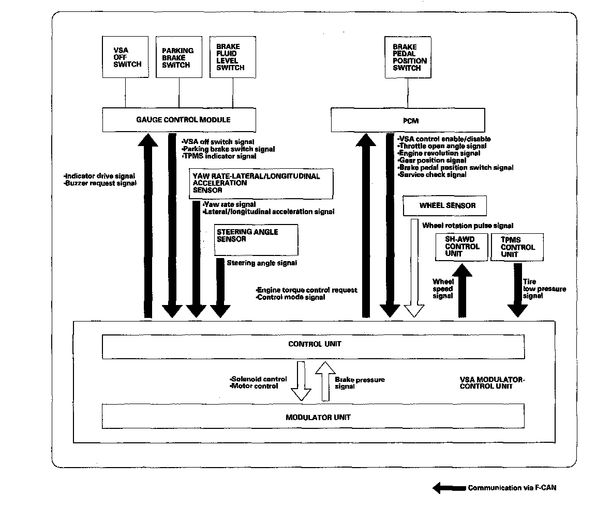
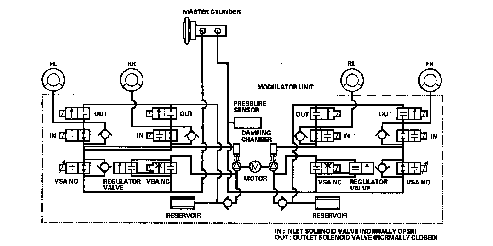

Antilock Brakes / Traction Control Systems: Description and Operation
System DescriptionVSA Modulator-control Unit Inputs And Outputs For 46P Connector (Part 1):

VSA Modulator-control Unit Inputs And Outputs For 46P Connector (Part 2):

System Outline
This system is composed of the VSA modulator-control unit, the wheel sensors, the steering angle sensor, and the yaw rate-lateral/longitudinal acceleration sensor, and the system indicators in the gauge control module. The VSA modulator control unit controls the ABS, EBD, TCS, VSA, TSA, and brake assist with the brake pressure of each wheel and the engine torque.

ABS Features
Anti-lock control
Without ABS, when the brake pedal is pressed while driving, the wheels sometimes lock before the vehicle comes to a stop. In such an event, the maneuverability of the vehicle is reduced if the front wheels are locked, and the stability of the vehicle is reduced if the rear wheels are locked, creating an extremely unstable condition. With ABS, the system precisely controls the slip rate of the wheels to ensure maximum grip force from the tires, and it thereby ensures maneuverability and stability of the vehicle. The ABS calculates the slip rate of the wheels based on the four wheel speeds, and then it controls the brake fluid pressure to reach the target slip rate.
Main Control
The control unit detects the wheel speed based on the wheel sensor signals it receives, then it calculates the vehicle speed based on the detected wheel speed. The control unit detects the vehicle speed during deceleration based on the wheel speeds.
The control unit calculates the slip rate of each wheel, and transmits the control signal to the modulator unit solenoid valve when the slip rate is high.
The hydraulic control has three modes: Pressure intensifying, pressure reducing, and pressure retaining.
EBD Features
The electronic brake distribution (EBD) feature helps control vehicle braking by adjusting the rear brake force in accordance with the rear wheel load before the ABS operates. Based on the wheel sensor signals, the control unit uses the modulator to control the rear brakes individually. When the rear wheel speed is less than the front wheel speed, the VSA modulator-control unit retains the current rear brake fluid pressure by closing the inlet valve in the modulator. As the rear wheel speed increases and approaches the front wheel speed, the VSA modulator-control unit increases the rear brake fluid pressure by momentarily opening the inlet valve. This whole process is repeated very rapidly. While this is happening, kickback may be felt at the brake pedal.
TCS Features
When a drive wheel loses traction on a slippery road surface and starts to spin, the VSA modulator-control unit applies brake pressure to the spinning wheel and sends an engine torque control request to the PCM to slow the spinning wheel and keep traction.
VSA System Features
Oversteer control
Applies the brake to the front and rear outside wheels
Understeer control
^ Applies the brake to the front and rear inside wheels
^ Controls the engine torque when accelerating
Brake Assist Features
Brake assist helps ensure that any driver can achieve the full braking potential of the vehicle by increasing brake system pressure in a panic situation, bringing the vehicle into a full ABS stop.
If during a panic stop the VSA modulator-control unit determines that the brake system pressure increases above a threshold in less than a certain amount of time, the VSA modulator-control unit engages brake assist.
Because the brake system pressure crossed the pressure threshold before the time threshold had expired, the VSA modulator-control unit goes into brake assist mode.
Modulator Unit
The modulator unit consists of the inlet solenoid valve, the outlet solenoid valve, the VSA NO (normally open) solenoid valve, the VSA NC (normally closed) solenoid valve, the reservoir, the pump, the pump motor, and the damping chamber.
The hydraulic control has three modes of ABS action; pressure intensifying, pressure retaining, and pressure reducing. Pressure adding mode is a combination of at TCS, VSA, and brake assist action. The hydraulic circuit is an independent four channel type; one channel for each wheel.

Trailer Stability Assist Features
While towing a trailer, factors, such as a lane change, inappropriate tongue weight, and crosswind, can cause trailer sway. This may also cause the vehicle to sway. The trailer stability assist helps stabilize the vehicle, using the same system as VSA (VSA modulator control unit and sensors). With signals from each sensor, the trailer stability assist detects when trailer sway affects the vehicle, and then reduces vehicle speed while stabilizing the vehicle. The rear brake lights automatically turn on when the trailer stability assist activates.